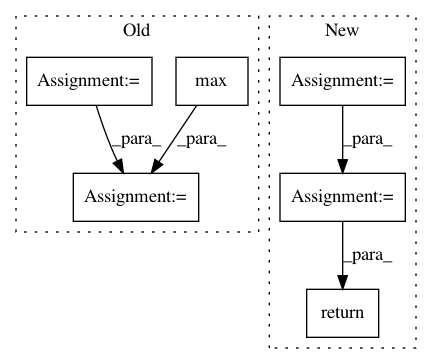

649325ff53812350688e3beea2979b0c7e62940a,keras_frcnn/data_generators.py,,union,#,25
Before Change
def union(au, bu):
x = min(au[0], bu[0])
y = min(au[1], bu[1])
w = max(au[2], bu[2]) - x
h = max(au[3], bu[3]) - y
return x, y, w, h
def intersection(ai, bi):
x = max(ai[0], bi[0])
After Change
def union(au, bu, intersection):
area_a = (au[2] - au[0]) * (au[3] - au[1])
area_b = (bu[2] - bu[0]) * (bu[3] - bu[1])
area_intersection = intersection[2] * intersection[3]
area_union = area_a + area_b - area_intersection
return area_union
def intersection(ai, bi):
x = max(ai[0], bi[0])
In pattern: SUPERPATTERN
Frequency: 3
Non-data size: 6
Instances
Project Name: kbardool/keras-frcnn
Commit Name: 649325ff53812350688e3beea2979b0c7e62940a
Time: 2017-06-15
Author: yannhenon@gmail.com
File Name: keras_frcnn/data_generators.py
Class Name:
Method Name: union
Project Name: cesium-ml/cesium
Commit Name: 19fbae4ea6092bfc69e4f828febbd15f72365311
Time: 2016-11-10
Author: brettnaul@gmail.com
File Name: cesium/features/cadence_features.py
Class Name:
Method Name: delta_t_hist
Project Name: sony/nnabla-examples
Commit Name: 56926bc8b4a158e1c40cddbc795303bc6a66f44d
Time: 2019-05-23
Author: sukriti.mehrotra@sony.com
File Name: semantic-segmentation/deeplabv3plus/image_preprocess.py
Class Name:
Method Name: resize